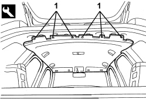
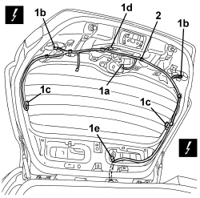
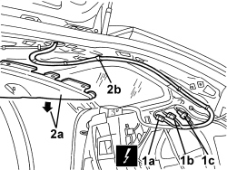
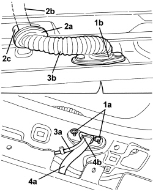

5505B55 TAIL-GATE WIRING - R R
- Path
- Procedures > 55 ELECTRICAL EQUIPMENT > 5505 INSTRUMENT/GAUGE ELECTRICAL CIRCUITS > 5505B DOOR, BOOT AND BONNET WIRING > 5505B55 TAIL-GATE WIRING - R R
- Kind
- repair procedure (removal / refitting; the operation number is the code)
- Applies to
- all engines; all production periods; only with equipment: Station Wagon
- Interactive page
- https://sloeber94.github.io/elrnDB/alfa/159/en/#/939005344
Applies to: all engines; all production periods; only with equipment: Station Wagon
 Removing
Removing
 Refitting
RefittingOp. 7040G36 BULB HOLDER FOR LOAD CARRYING COMPARTMENT lighting on tailgate - R.R.
Op. 7015A05 TAILGATE LOWER INTERIOR PANEL-R R
Op. 7015A06 TAILGATE UPPER INTERIOR PANEL - R.R.
Op. 7210G76 REAR SPOILER - R.R.
- Work on the right side.
Op. 7040G40 LOAD COMPARTMENT LIGHT BULB HOLDER - R R
Op. 7040B22 LUGGAGE COMPARTMENT/LOAD PLATFORM MOULDING - R+R
Op. 7040B04 SIDE MOULDING (ONE) LH OR RH FOR LUGGAGE COMPARTMENT - R.R.
Op. 7040B10 LOAD PLATFORM (LUGGAGE PLATFORM) TRIM - R+R
Op. 7040B18 LOAD COMPARTMENT LOAD PLATFORM SIDE TRIM ONE LH OR RH - R.R
Op. 7040B30 L/H OR R/H SIDE SUPPORT (ONE) FOR LOAD PLATFORM COVER BLIND - ARRANGE
Op. 7040H42 REAR PILLAR TRIM (ONE), LEFT OR RIGHT- R.R
Op. 7040H68 TAI GATE HOUSING PILLAR TRIM (ONE), LH OR RH - R.R.
- Remove the right rear grab handle.
Op. 7065C30 GRAB HANDLE (ONE) LEFT, RIGHT OR CENTRE PASSENGER COMPARTMENT INTERIOR - R.R
1. Release the roof lining rear retaining buttons using the special tool.
Tool | Description | Function | Validity |
|---|---|---|---|
1823015000 | Knife | Retainer removal |

Applies to: all engines; all production periods; only with equipment: Station Wagon
1. Disconnect the electrical connections (1a, 1b, 1c, 1d).
Description | Component |
|---|---|
REAR WIPER MOTOR | |
LEFT REAR LIGHT CLUSTER (MOVING SECTION ON BOOT LID) | See F035 LEFT REAR LIGHT CLUSTER (MOVING SECTION ON BOOT LID) |
RIGHT REAR LIGHT CLUSTER (MOVING SECTION ON BOOT LID) | See F036 RIGHT REAR LIGHT CLUSTER (MOVING SECTION ON BOOT LID) |
HEATED REAR WINDSCREEN | |
BOOT LOCK GEARED MOTOR | |
ADDITIONAL REAR LIGHT (THIRD BRAKE LIGHT) |
2. Disconnect the wiring retainers from the tailgate.

Applies to: all engines; all production periods; only with equipment: Station Wagon
1. Disconnect the electrical connections (1a, 1b, 1c).
Description | Component |
|---|---|
REAR / TAILGATE COUPLING |
2. Gently lower the roof lining (2a) and disconnect the retainers (2b) for the tailgate wiring from the bodyshell.

Applies to: all engines; all production periods; only with equipment: Station Wagon
1. Undo nuts (1a) securing the duct seal (1b).
2. Release the duct seal (2a) and extract the wiring (2b) from the tailgate, passing it through the opening (2c).
3. Extract the rearscreen washer pipe (3a) from the connector (3b).
4. Extract the tailgate wiring (4a) from the bodyshell passing it through the opening (4b), pulling it upwards.

Applies to: all engines; all production periods; only with equipment: Station Wagon
Refitting
Removing- Check that the wiring is not damaged and that the individual conducts are correctly fastened to the connections.
If necessary, carry out continuity tests.
- Fit the tailgate wiring in place, both in the bodyshell and the tailgate, then connect it to the retainers.
- Fit the rearscreen washer pipe in place in the connector.
- Attach the duct seals and tighten the nuts.
- Connect the electrical connections to the tailgate and to the bodyshell.
- Do up the rear ceiling retaining studs.
Op. 7065C30 GRAB HANDLE (ONE) LEFT, RIGHT OR CENTRE PASSENGER COMPARTMENT INTERIOR - R.R
Op. 7040H68 TAI GATE HOUSING PILLAR TRIM (ONE), LH OR RH - R.R.
Op. 7040H42 REAR PILLAR TRIM (ONE), LEFT OR RIGHT- R.R
Op. 7040B30 L/H OR R/H SIDE SUPPORT (ONE) FOR LOAD PLATFORM COVER BLIND - ARRANGE
Op. 7040B18 LOAD COMPARTMENT LOAD PLATFORM SIDE TRIM ONE LH OR RH - R.R
Op. 7040B10 LOAD PLATFORM (LUGGAGE PLATFORM) TRIM - R+R
Op. 7040B04 SIDE MOULDING (ONE) LH OR RH FOR LUGGAGE COMPARTMENT - R.R.
Op. 7040B22 LUGGAGE COMPARTMENT/LOAD PLATFORM MOULDING - R+R
Op. 7040G40 LOAD COMPARTMENT LIGHT BULB HOLDER - R R
Op. 7210G76 REAR SPOILER - R.R.
Op. 7015A06 TAILGATE UPPER INTERIOR PANEL - R.R.
Op. 7015A05 TAILGATE LOWER INTERIOR PANEL-R R
Op. 7040G36 BULB HOLDER FOR LOAD CARRYING COMPARTMENT lighting on tailgate - R.R.
Topics linked from this page (20)
- 7015A05 TAILGATE LOWER INTERIOR PANEL-R R
- 7015A06 TAILGATE UPPER INTERIOR PANEL - R.R.
- 7040B04 SIDE MOULDING (ONE) LH OR RH FOR LUGGAGE COMPARTMENT - R.R.
- 7040B10 LOAD PLATFORM (LUGGAGE PLATFORM) TRIM - R+R
- 7040B18 LOAD COMPARTMENT LOAD PLATFORM SIDE TRIM ONE LH OR RH - R.R
- 7040B22 LUGGAGE COMPARTMENT/LOAD PLATFORM MOULDING - R+R
- 7040B30 L/H OR R/H SIDE SUPPORT (ONE) FOR LOAD PLATFORM COVER BLIND - ARRANGE
- 7040G36 BULB HOLDER FOR LOAD CARRYING COMPARTMENT lighting on tailgate - R.R.
- 7040G40 LOAD COMPARTMENT LIGHT BULB HOLDER - R R
- 7040H42 REAR PILLAR TRIM (ONE), LEFT OR RIGHT- R.R
- 7040H68 TAI GATE HOUSING PILLAR TRIM (ONE), LH OR RH - R.R.
- 7065C30 GRAB HANDLE (ONE) LEFT, RIGHT OR CENTRE PASSENGER COMPARTMENT INTERIOR - R.R
- 7210G76 REAR SPOILER - R.R.
- D085 REAR/TAILGATE COUPLING
- F035 LEFT REAR LIGHT CLUSTER (MOVING SECTION ON BOOT LID)
- F036 RIGHT REAR LIGHT CLUSTER (MOVING SECTION ON BOOT LID)
- F040 ADDITIONAL TAIL-LIGHT ('THIRD BRAKE LIGHT')
- N016 REAR WINDOW WIPER MOTOR
- N057 BOOT LOCK GEARED MOTOR
- P055 HEATED REARSCREEN